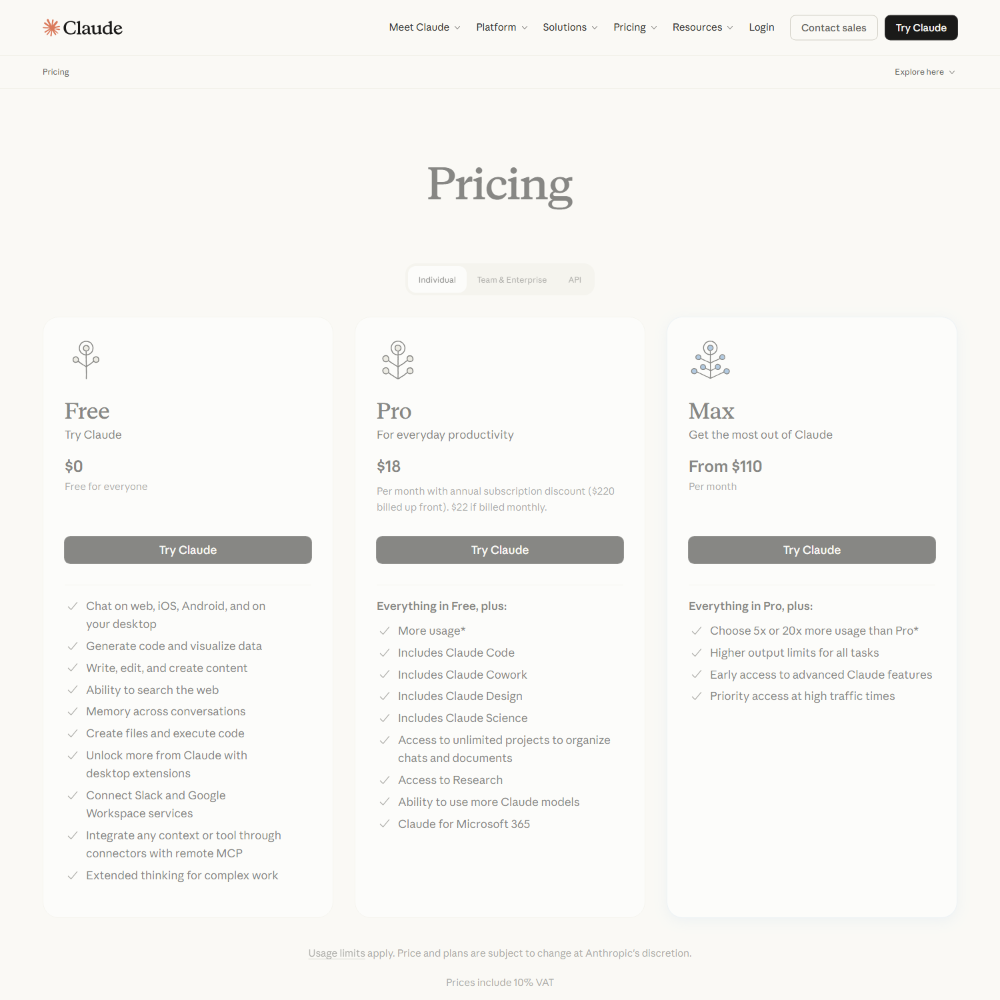
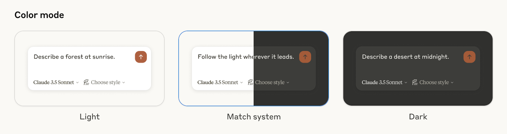
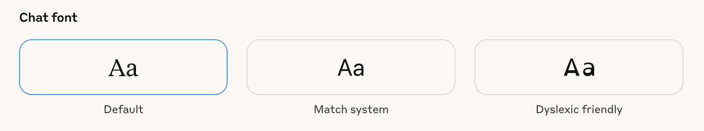
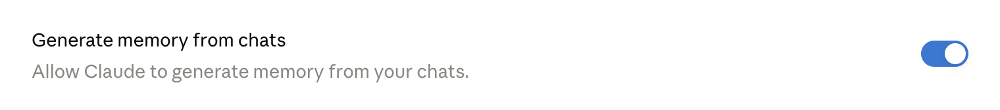
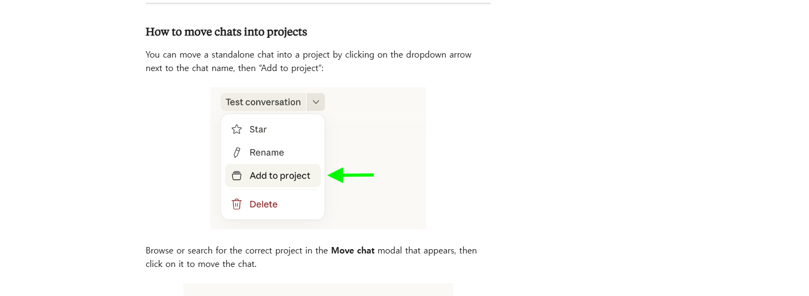

클로드 사용법 총정리 — 접속부터 초기 설정, 무료·프로 차이까지 (Claude)
클로드 사용법을 한 줄로 정리하면, 접속 방법을 고르고 무료·프로·맥스 중 하나를 정한 뒤 설정 몇 가지만 만지면 바로 쓸 수 있어요. 기준 시점은 2026년 7월 24일이에요.
클로드는 앤스로픽(Anthropic)이 만든 AI 챗봇이에요. 이 글은 일반 사용자용 웹·데스크톱·모바일 앱 기준으로 정리했어요. 개발자용 명령줄 도구인 클로드 코드(Claude Code)는 따로 있어요.
클로드, 어디서 시작하나요
클로드는 웹, 데스크톱 앱, 모바일 앱 세 곳에서 시작할 수 있어요. 처음 열면 로그인이나 가입부터 해야 하고, 만 18세 이상만 이용할 수 있어요.
웹은 claude.ai, 데스크톱은 Mac·Windows용, 모바일은 iOS·Android 앱이에요. 접속 가능한 국가인지는 공식 도움말의 국가·지역 목록에서 확인할 수 있어요.
어디서든 화면 아래 입력창에 메시지를 쓰고 보내면 대화가 시작돼요. 입력창 왼쪽 아래 '+' 버튼을 누르면 파일 첨부 같은 추가 기능이 열려요. '/'를 입력하면 명령어 목록이 떠요.
무료·프로·맥스, 뭐가 다른가요
무료는 기본 기능을 거의 다 쓸 수 있고, 프로는 사용량과 기능이 늘고, 맥스는 사용량이 훨씬 커요. 무료도 5시간마다 쓸 수 있는 양이 초기화돼요.
| 플랜 | 가격 | 핵심 포함 |
|---|---|---|
| Free(무료) | $0 | 웹·iOS·Android·데스크톱 채팅, 코드 생성·데이터 시각화, 웹 검색, 대화 간 메모리, 파일 생성·코드 실행, 커넥터 |
| Pro | 한국 표시 월 $22 (연간 결제 시 월 $18·연 $220) | Free 전체 + 사용량 증가, Claude Code·Cowork·Design·Science 포함, 프로젝트 무제한, Research, 더 많은 모델, Claude for Microsoft 365 |
| Max | 한국 표시 월 $110부터 | Pro 전체 + 5배 또는 20배 사용량 선택, 모든 작업 출력 한도 상향, 신기능 조기 접근, 트래픽 많을 때 우선 접속 |
Cowork는 업무 자동처리, Design은 시각 제작, Science는 과학 연구용 도구, Research는 자료를 훑어 출처 달린 답을 만드는 기능이에요.
가격은 2026.07.24 claude.com/pricing 확인 기준이에요. 표시가는 접속한 나라에 따라 달라지고, 한국에서 열면 부가세 10%가 포함된 금액으로 보여요. 세전 미국 기준가는 프로 월 $20·연 결제 시 월 $17·연 $200, 맥스는 월 $100부터예요.
이 글은 개인용 3가지만 다뤄요. Team·Enterprise·API 요금은 따로 있어요.

클로드 공식 요금 페이지의 무료·프로·맥스 카드 — 한국에서 접속한 화면(부가세 10% 포함 표시, 2026.07.24 캡처)
이미지 출처: claude.com/pricing(한국에서 접속한 화면 — 부가세 10% 포함 표시) · 네이버 본문엔 받아서 재업로드 권장
이번엔 표에 없는 것 중에서 유료 전용이라고 오해하기 쉬운 두 가지를 짚어 볼게요.
- 슬랙·구글 워크스페이스(Google Workspace) 연결
- 데스크톱 확장 기능
이 두 가지도 무료에서 다 돼요.
꼭 확인할 설정 5가지
화면의 프로필 이니셜을 누르고 Settings로 들어가면 아래 5가지를 바로 확인할 수 있어요. 웹·데스크톱은 왼쪽 아래, 모바일은 오른쪽 위 이니셜을 누르면 돼요.
| 메뉴 | 무엇을 하나 |
|---|---|
| Instructions for Claude | 계정 전체에 적용될 선호 방식·말투를 적어 둬요 |
| Memory | 대화 기억을 켜고 끄고, 항목을 확인·수정·삭제해요 |
| Appearance | 화면 모드(Light/Match system/Dark)와 채팅 글꼴을 바꿔요 |
| Usage | 5시간 세션과 주간 사용량 진행바를 확인해요(유료 플랜 기준) |
| Time and focus | 휴식 알림과 방해 금지 시간을 설정해요 |
Instructions for Claude엔 자주 쓰는 용어나 원하는 답변 방식을 적어 두면 편해요. 설정 메뉴 구성은 2026.07.24 공식 도움말 기준이에요.
Settings 메뉴 화면(계정마다 노출 항목이 조금 다를 수 있어요)
다크 모드가 필요하면 Appearance에서 바꿔 보세요.

공식 도움말 설명 화면 — Appearance의 Color mode 선택(2026.07.24 확인 기준) · 화면 속 예시 모델명은 이전 버전 표기예요
이미지 출처: 공식 도움말 — Appearance 설정 · 네이버 본문엔 받아서 재업로드 권장
난독증 친화 글꼴도 Appearance에서 바꿀 수 있어요.

공식 도움말 설명 화면 — Appearance의 Chat font 선택 — 난독증 친화 글꼴 포함(2026.07.24 확인 기준)
이미지 출처: 공식 도움말 — Appearance 설정 · 네이버 본문엔 받아서 재업로드 권장
메모리(기억), 이렇게 관리해요
메모리는 Settings > Memory에서 켜고 끌 수 있어요. 토글 이름은 'Generate memory from chats'예요. 토글을 누르면 Pause memory와 Reset memory 중 하나를 고르는 창이 떠요.

Memory의 Generate memory from chats 토글">공식 도움말 설명 화면 — Settings > Memory의 'Generate memory from chats' 토글(2026.07.24 확인 기준)
이미지 출처: 공식 도움말 — 채팅 검색과 메모리 · 네이버 본문엔 받아서 재업로드 권장
메모리는 채팅 검색과 다른 기능이에요. 공식 명칭은 'Search and reference chats'예요. 같은 Memory 화면 안에 별도 토글로 있어요. 채팅 검색은 프로·맥스 같은 유료 플랜에서만 되고, 메모리는 무료를 포함한 전 플랜에서 써요.
메모리는 2026년 3월 2일부터 무료 사용자까지 전 플랜에 열렸어요. 예전엔 유료 전용이었던 기능이에요.
2026년 7월 10일부터는 하루 단위 요약 대신, 카테고리별로 나뉜 개별 항목으로 바뀌었어요. 항목은 Settings > Memory에서 하나씩 확인하고 고치거나 지울 수 있어요. 메모리 항목은 실시간으로 쌓여요. 정해진 시간에 한 번에 만들어지지 않아요.
멈추거나 지우는 방법은 두 가지예요. 둘 다 Settings > Memory 안에서 눌러요.
- Pause memory — 이미 쌓인 기억은 남아요. 멈춘 동안엔 그 기억을 쓰지도, 새로 만들지도 않아요.
- Reset memory — 지금까지 쌓인 기억을 전부 영구 삭제해요. 되돌릴 수 없어요.
시크릿 대화(유령 아이콘)는 기억도 검색도 되지 않아요. 프로젝트 밖에서 새 대화를 시작할 때만 떠요. 남기고 싶지 않은 대화라면 여기서 해 보세요.
Team·Enterprise 플랜은 아직 하루 단위 요약 방식을 쓰고, 새 방식으로 순차 전환 중이에요.
노력(effort)과 Thinking, 뭘 고르나요
고르는 순서만 말하면, 노력은 Default에 두고 복잡할 때만 올리거나 Thinking을 켜면 돼요.
노력은 모델이 답을 준비할 때 얼마나 깊게 생각할지를 정하는 설정이에요. Default로 표시된 값이 모델별 권장값이에요.
모델 이름은 눌러서 바꿔요. 웹·데스크톱은 입력창 아래, 모바일은 화면 위쪽에 떠요.
노력 단계는 다섯 가지예요.
| 단계 | 언제 쓰나 | 지원 모델 |
|---|---|---|
| Low·Medium | 평소 대화·간단한 작업 | Opus 4.8·4.7·4.6·Sonnet 4.6 |
| High | 품질과 속도의 균형이 필요할 때 | Opus 4.8·4.7·4.6·Sonnet 4.6 |
| Extra high | 오래 걸리는 코딩·자동 작업 | Opus 4.7 이상 |
| Max | 가장 깊게 따져야 할 때 | Opus 4.8·4.7·4.6·Sonnet 4.6 |
노력 단계는 요금제 맥스와 이름만 같을 뿐 다른 설정이에요.
공식 도움말은 High를 두고 "품질과 속도의 균형이 가장 좋다"고 설명해요. (원문: "High offers the best overall balance of quality and speed." — 공식 도움말)
확장 사고(Thinking)는 노력과 별개 설정이에요. Thinking을 켜면 답하기 전에 문제를 잘게 쪼개 계획부터 세워요. 노력 단계와 함께 쓸 수 있어요.
모델 목록은 자주 바뀌니 공식 릴리스 노트에서 확인하는 게 정확해요. 가장 최근에 나온 건 클로드 소네트 5(2026년 6월 30일)예요.
프로젝트(Projects)로 반복 작업 정리하기
프로젝트는 같은 주제의 대화와 자료를 한곳에 묶어 두는 기능이에요.
- 사이드바에서 Projects를 열거나 claude.ai/projects로 들어가요.
- 오른쪽 위 '+ New Project'를 눌러요.
- 이름과 설명을 입력해요.
- 오른쪽 지식 영역에서 '+'를 눌러 문서를 추가해요.
- 'Set project instructions'를 누르고 지침을 적은 뒤 'Save instructions'로 저장해요.
이미 하던 대화도 프로젝트로 옮길 수 있어요. 채팅 이름 옆 드롭다운에서 Add to project를 누르면 옮길 프로젝트를 고르는 창이 떠요.

공식 도움말 설명 화면 — 채팅을 프로젝트로 옮기는 방법(2026.07.24 확인 기준)
이미지 출처: 공식 도움말 — 프로젝트 만들고 관리하기 · 네이버 본문엔 받아서 재업로드 권장
가장 많이 오해하는 부분이 있어요. 같은 프로젝트 안이라도 채팅끼리 내용이 자동으로 공유되지 않아요. 지식 영역에 넣은 자료만 전 채팅에서 같이 쓰여요.
무료 계정도 프로젝트를 만들 수 있고, 지식 영역도 함께 써요. 무료는 프로젝트를 5개까지 만들 수 있어요. 프로부터는 개수 제한이 없어요.
프로젝트 공유 기능은 Team·Enterprise 플랜에서만 열려요. 공유할 때는 Can view·Can edit 두 권한 중 하나를 정해요.
사용량 아껴 쓰는 법
질문을 한 번에 몰아서 보내고, 필요한 내용을 구체적으로 적으면 메시지를 아낄 수 있어요.
관련된 질문은 나눠 보내지 말고 한 메시지에 합쳐요. 프로젝트에 자료를 올려 두면 캐시로 남아 다음에 또 쓸 수 있어요.
프로·맥스는 채팅 검색으로 예전 대화를 찾아 이어 쓸 수 있어요. 같은 맥락을 다시 설명하지 않아도 돼요.
코딩은 코드와 맥락을 처음부터 다 주고, 글쓰기는 전체 글을 한 번에 보내는 식이 효율적이에요.
유료 플랜은 Settings > Usage에서 5시간 세션과 주간 사용량 진행바로 확인해요. 공식 도움말 — 사용량 아껴 쓰기가 이 진행바를 유료 플랜 기준으로 안내해요.
Settings > Usage 진행바 화면(유료 플랜 기준·예시)
정확한 무료 메시지 개수는 공식 문서에 나와 있지 않아요. 대화 길이·복잡도, 사용 기능, 모델, 노력 수준에 따라 달라진다고만 안내해요.
프롬프트 잘 쓰는 법
프롬프트는 구체적으로, 원하는 결과를 명확히 적을수록 좋아요.
간단한 질문부터 복잡한 다단계 작업까지 자연스럽게 대화하듯 쓰면 돼요.
예를 들면 이래요.
- 나쁜 예 — "이거 요약해 줘"
- 좋은 예 — "이 회의록을 다섯 줄로 요약하고, 다음 할 일만 따로 뽑아 줘"
한 번에 안 되면 답을 보고 요청을 다듬어 다시 물어보는 반복이 정상이에요. 쉬운 질문으로 시작해서 점점 구체적으로 좁혀가는 방식이 잘 맞아요.
자주 묻는 질문
Q. 대화를 지우면 메모리도 같이 지워지나요?
아니요. 대화가 만료되거나 삭제돼도 그 대화의 메모리 항목은 남아 있어요. 메모리만 지우려면 Settings > Memory에서 항목을 골라 Delete를 누르면 돼요.
Q. 파일은 어떤 형식으로, 얼마나 크게 올릴 수 있나요?
PDF·DOCX·CSV·TXT·HTML·ODT·RTF·EPUB·JSON·XLSX 문서와 JPEG·PNG·GIF·WebP 이미지를 올릴 수 있어요. 대화에 올릴 땐 파일 하나당 500MB·최대 20개, 프로젝트 지식 영역은 하나당 30MB예요.
참고한 곳
· Claude 공식 요금 페이지
· 공식 도움말 — 채팅 검색과 메모리
· 공식 도움말 — 프로젝트 만들고 관리하기
· 공식 도움말 — 화면 설정
· 공식 도움말 — 사용량 아껴 쓰기
· 공식 도움말 — 클로드 시작하기
✔ 같이 보면 좋아요
· GPT-5.6 Sol·Terra·Luna 차이 정리 — GPT-5.5랑 뭐가 다른가요
· 챗GPT 워크(ChatGPT Work)란 — 챗GPT·코덱스와 다른 점, 플랜별 이용 범위
하루 정리
· 클로드는 웹·데스크톱·모바일 어디서든 시작할 수 있고, 무료로도 웹 검색과 파일 생성이 다 돼요
· 처음엔 Settings에서 5가지 메뉴만 확인하면 돼요(Usage 진행바는 유료 플랜 기준)
· 메모리와 채팅 검색은 다른 기능이라, 무료도 메모리는 쓰지만 채팅 검색은 유료부터예요
· 프로젝트는 채팅끼리 내용이 공유되지 않아요. 같이 쓰려면 자료를 지식 영역에 올려 둬야 해요
처음이라면 무료로 설정 몇 개만 만져보고, 필요할 때 플랜을 올려도 늦지 않아요.